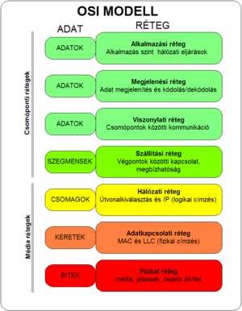
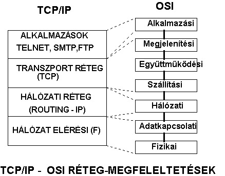

Kommunikációs Modellek
Az internetes kommunikáció különböző protokollokon keresztül valósul meg, amelyeket a TCP/IP és az OSI modell határoz meg. Ezek az architektúrák a hálózat rétegzett felépítését biztosítják.
OSI Modell
TCP/IP Modell
Internetes Protokollok
| Protokoll Neve | Protokoll Száma | Feladata | Réteg |
|---|---|---|---|
| HTTP | 1.1 / 2 / 3 | Weboldalak betöltése és az erőforrások letöltése | Alkalmazási réteg |
| HTTPS | - | Biztonságos webes kommunikáció | Alkalmazási réteg |
| FTP | - | Fájlok átvitele | Alkalmazási réteg |
| SMTP | - | Email küldése | Alkalmazási réteg |
| IP | IPv4 / IPv6 | Csomagok irányítása hálózatok között | Hálózati réteg |
| TCP | - | Megbízható adatátvitel | Szállítási réteg |
| UDP | - | Gyors, nem megbízható adatátvitel | Szállítási réteg |
| DNS | - | Domain nevek IP-címekké alakítása | Alkalmazási réteg |
| RIP | RFC 1058 | Routing információs protokoll hálózati útvonalakhoz | Hálózati réteg |
| IEEE 802.11n | Wi-Fi szabvány | Vezeték nélküli kommunikáció | Fizikai és Adatkapcsolati réteg |